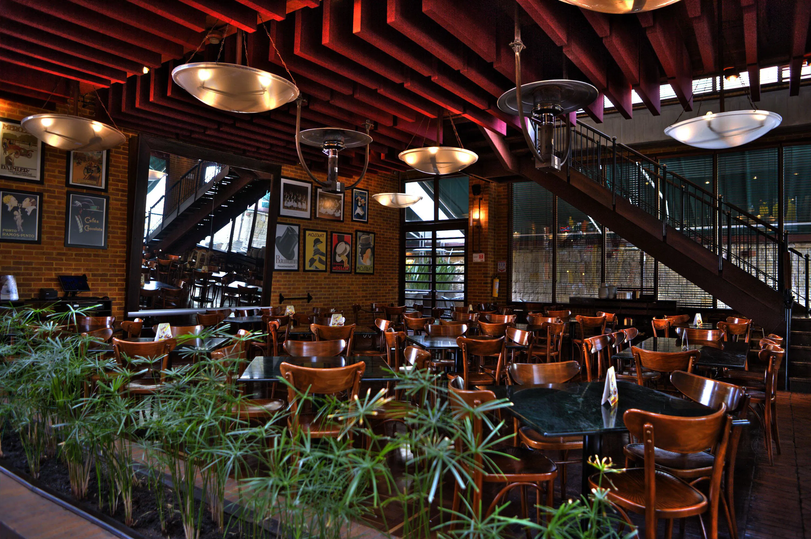
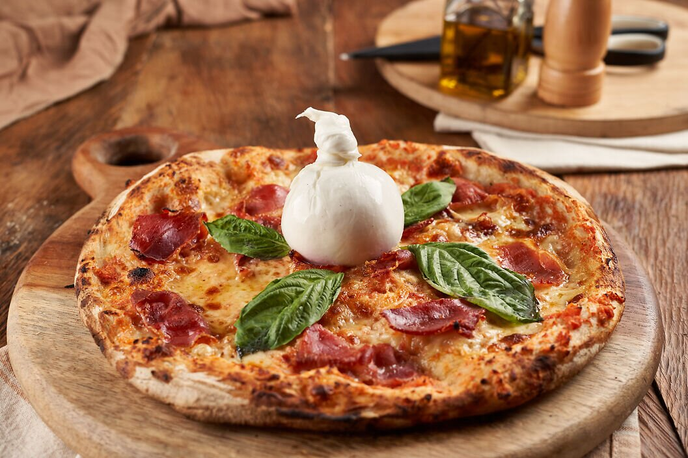

Sushi World

Ubicación: Cali, Colombia
Menú: Sushi fresco, rolls especiales y cocina japonesa moderna.
Esta página muestra algunos de mis restaurantes favoritos y su menú.

Ubicación: Bogotá, Colombia
Menú: Cocina internacional con platos de alta calidad y presentación gourmet.

Ubicación: Medellín, Colombia
Menú: Especialidad en pizzas artesanales y pastas italianas.
Ubicación: Cali, Colombia
Menú: Sushi fresco, rolls especiales y cocina japonesa moderna.

Ubicación: Barranquilla, Colombia
Menú: Carnes a la parrilla, cortes tradicionales y platos típicos argentinos.

Ubicación: Cartagena, Colombia
Menú: Café de especialidad, postres y platos ligeros mediterráneos.